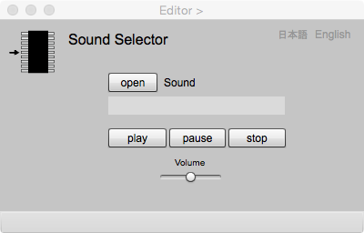

Sound Selector
音声の取得
Sound Selector は，音声データ (mp3) を地物属性にするためにあります．音声を属性にするには，このページで音声データをオープンして，Editor ページで add します．
Sound Selector

図1. Sound Selector の操作画面
Fields
Sound
ここに，オープンした音声ファイルの名前が表示されます．
Buttons
open
音声ファイルをオープンします．音声ファイルは，あらかじめ，作業用フォルダーの下にsoundsという名前のフォルダーを設け，そこにまとめて入れておいて下さい．そうすることによって，作業用フォルダー全体を渡すことによって，別のパソコンで，簡単にデータを読むことが，できるようになります．
play
音声を聴くときは，このボタンを押します．
pause
音声を一次停止にするときは，このボタンを押します， ボタンを押すと，ラベルはrestartに変わります．それを押せば，再生が再開します．
stop
音声を停止するときは，このボタンを押します．
Volume
音声のボリュームを変えるときはスライダーを移動させます．
日本語
今あなたが読んでいるドキュメントが表示されます．
English
You can read the tutorial written in English.